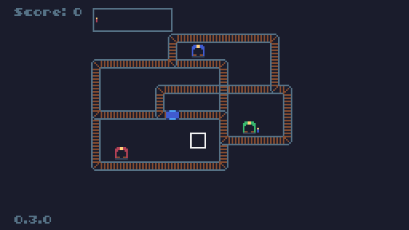
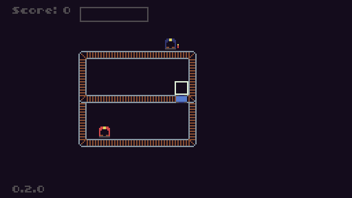
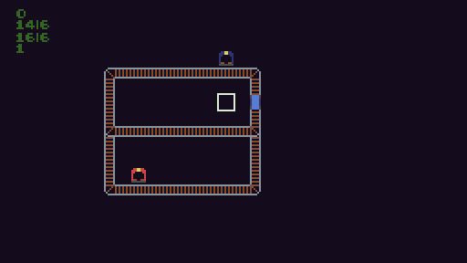

Train-Fic (Changelog)
English page
Jouer sur tic.computer
0.3.0
- Changement de palette (passage de la palette TIC-80 vers Sweetie-16 modifié)
- Changement dans la carte
- Ajout d'une troisième gare (la gare verte) et des voyageurs de cette couleur

Jouer ici Télécharger l'HTML
14/03/2018
0.2.0
- Ajout des voyageurs
- Ajout de l'affichage des voyageurs à coté de la gare
- Ajout du contenu du train en haut de l'écran
- Ajout du score, en fonction du nombre de voyageurs transportés

Jouer ici Télécharger l'HTML
10/03/2018
0.1.0
- Ajout des mouvements du train
- Ajout des différents rails et du changement des aiguillages
- Design des sprites
- Ajout des gares et de l'arret du train

Jouer ici Télécharger l'HTML
07/03/2018